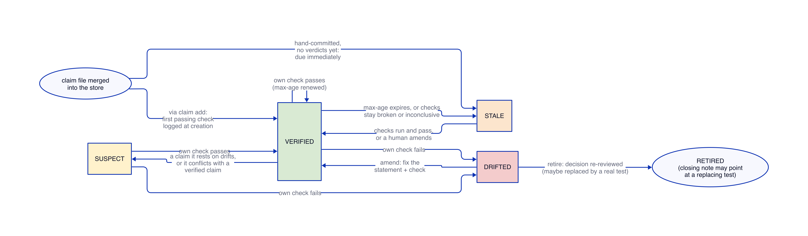
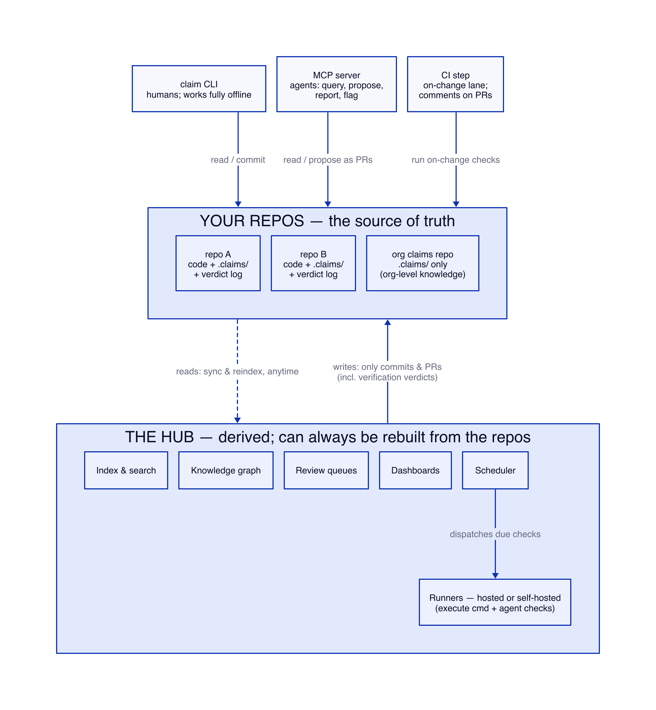
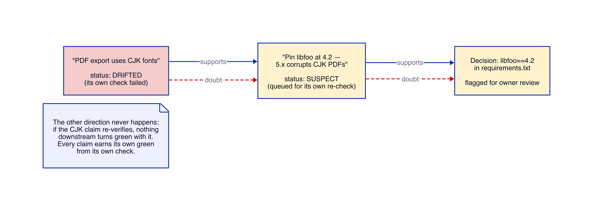

claim
A tool that checks whether the facts you wrote down are still true.
Every codebase is full of recorded reasons: a security exception that says a vulnerability doesn’t apply, a dependency pinned to an old version, a skipped test, a line in an agent’s context file. Each was true when someone wrote it. Nothing checks it afterward, so it quietly rots — and the person who later makes it false usually has no idea the note exists.
claim binds each of those facts to a way of re-checking it. When a fact stops being
true, the system notices and says so, instead of leaving a confident sentence that is now wrong.
The one-line version: recorded knowledge either re-verifies itself or comes back to a human
— the failure mode is a nag, never a lie.
The core idea
A claim is two things written down together:
- a statement — a fact, in plain language;
- a check — a way to re-verify the fact.
You write claims where you already record decisions, and commit them to git like any other source. The CLI is a stateless runtime verifier: it reads the claim files, runs their checks, and reports whether each fact held, drifted, or is broken right now. It stores nothing — no verdict log, no computed status, no schedule. The verdict stream, the schedule, and the drift routing live in a per-environment hub that ingests the CLI’s reported output. That’s the whole loop: record → check → report drift → adjudicate.
Why not just write a test? A failing test asks “is the change that
triggered me wrong?” When the honest answer is “no, the world legitimately changed,”
whoever tripped the test edits it away, and the reason it existed is lost. A claim carries the
reason with it and routes drift to the decision’s owner, not to whoever happened to change
the world. (Some facts should become tests — after they’ve earned it; that
is what claim retire with a closing note is for.)
Getting started
Install
Build the CLI from source with Rust’s package manager, from a checkout of this repository:
cargo install --path crates/claim
claim --helpThe binary lands on your PATH at ~/.cargo/bin/claim. To run against a
development build instead, use cargo build -p claim and ./target/debug/claim.
A first claim
In a git repo, scaffold a store and record a claim about a pinned dependency:
# set the scene
echo 'libfoo==4.2' > requirements.txt
git add -A && git commit -m init
claim init # create the .claims/ store
claim add \
--id libfoo-pin \
--statement "Pin libfoo at 4.2 — 5.x corrupts CJK PDF export." \
--run "grep -q 'libfoo==4.2' requirements.txt" \
--supports requirements.txt#libfooThe --run command is the check: it exits 0 while the pin holds. add runs
it once and requires it to pass — a passing check against reality is the verification
(a birth gate) — then writes the claim file under .claims/. It
writes no verdict: a verdict is telemetry the hub records, never something the CLI commits, and
a false claim is caught by the next check anyway. It never touches your working tree otherwise. Commit
the new file like any other:
git add .claims && git commit -m "record libfoo pin claim"Every command takes --json for machine-readable output; the flag may lead or follow
the verb (claim --json list or claim list --json). claim is
headless by default: add errors with the flag to pass when a required field is omitted,
never a prompt that could hang an agent. Pass -i/--interactive to be
prompted for omitted fields when authoring a claim by hand.
Claims
A claim lives in one Markdown file under .claims/. The body is the statement a human
reads; the front-matter is what the tool acts on.
---
id: libfoo-pin
checks:
- kind: cmd
run: "grep -q 'libfoo==4.2' requirements.txt"
supports: [requirements.txt#libfoo]
hub:
max-age: 120d
---
We pin libfoo at 4.2. Versions 5.x corrupt PDF export for CJK fonts.The same schema can also travel inside another file (like an agent’s CLAUDE.md)
as an <!-- claim ... --> HTML comment block, so a context file can carry the checks
that keep it honest. (The CLI authors and reads standalone .claims/*.md files; embedded
blocks are part of the format for hand-authoring.)
- id
- A required kebab-case slug, unique in the store, optionally namespaced with
/(e.g.payments/libfoo-pin). - statement
- The Markdown body: the fact, in plain language — what a person reads when the claim comes up for review. Required; a claim with no statement is rejected.
- checks
- A required, non-empty list. Each check has a
kind(cmd,agent, orhuman) and may carry askipblock. There is nowhenfield — whether a check runs on a code change or on a clock is CI and hub orchestration, not a property the claim asserts. See Checks & verdicts. - supports
- An optional top-level list of the decisions this fact justifies — a decision ref like
requirements.txt#libfooor another claim’s id. See Supports & drift. - hub
- An optional subfield of scheduling hints for the hub —
max-ageandrecheck, each an optional<N>dday count. The CLI validates these (a malformed value is a loud parse error) but never acts on them: freshness and cadence belong to the hub’s schedule, not to this stateless verifier. Omit the whole block and the hub decides.
Notably absent: no author, reviewer, owner, or status field, and no verdict log. Anything typed into a file can be forged or go stale, so those are derived, not stored — provenance from git, status from the hub. See The store & git.
Checks & verdicts
A check is how a claim gets re-verified. The most common kind is cmd,
an ordinary command: the tool runs it and reads its exit code. (agent checks, for facts
no command can settle, are covered below; human checks are a
deferred human look.) The tool turns a check’s outcome into a verdict — a
reported observation, never stored. This mapping is the heart of the tool, so it is deliberately
strict:
The cmd check… | Verdict | Means |
|---|---|---|
exits 0 | held | the fact is still true |
exits 1 | drifted | the fact is no longer true |
| any other exit, fails to spawn, is signalled, or times out | broken | the check itself couldn’t run |
The rule that matters: only a clean exit 0 counts as “still true.”
A missing tool, a deleted directory, a typo, a hung command — anything that stops the check from
completing — is broken, which the hub counts against freshness
exactly like a check that never ran. There is no path from “couldn’t check” to
“it’s fine.” A fourth verdict, unverifiable (ran,
but the evidence was inconclusive), exists for agent checks; a plain cmd check never
returns it.
Negation
Some facts are phrased as an absence (“the archived serde_yaml is not in the
lockfile”). Set negate: true and the tool flips held
and drifted — but never turns broken
into a pass. The tool owns the inversion; you never write a shell !, because a missing
tool would then flip a failure into a false “fine.” On the CLI this is
--negate; in the file it is the check’s negate field.
Skip — deliberately not running a check
Sometimes a check cannot run where claim check is invoked — an
agent check in a CI with no model runner, say. A check may carry a skip
block so it is not run there, without turning the build red. A skip is an
acknowledged, bounded debt, never a pass: a skipped check reports no verdict, so the
hub still counts the fact as unverified where the skip applies and the skip only keeps the build green
where it legitimately applies. It is the single most dangerous thing this tool offers — the
stale green light it exists to prevent — so its fields keep it honest:
checks:
- kind: agent
instruction: "Is negation still owned by the tool (no shell `!`)?"
skip:
reason: "no model runner in billing-free CI; verified locally" # required
unless: 'test -n "$CLAIM_AGENT_CMD"' # run (don't skip) when this exits 0
until: 2026-10-01 # the skip expires; then it runsreasonis required — a skip with no reason is refused at parse time. There are no silent skips.unless(optional) is a command that cancels the skip and runs the check when it exits0. A command that cannot be evaluated (any other exit, a spawn failure, a timeout) runs the check rather than silently muting it — a broken condition must never hide drift.until(optional) is a date (YYYY-MM-DD) or RFC 3339 instant at which the skip expires; on or after it the check runs regardless ofunless, and the lapse is reported. A skip with neitherunlessnoruntilis an indefinite skip — allowed, but surfaced plainly (claim listmarks the claim+skip, andclaim checkreports every skip) so an unbounded mute can never hide.
In claim check’s output a suppressed check shows as skipped with
its reason and either its expiry or (no expiry); when an until lapses the
run reports skip expired … on the check it re-enabled. Who added a skip, and when,
is git’s to say, never the file’s. claim amend refuses a skip-bearing check
rather than drop the skip on re-render; edit such a claim’s file directly.
The CLI & the hub
There are three layers, and the split between them is what keeps the tool honest. The
claim file is the truth: a statement, its check, its supports, reviewed in
a PR and attributed by git blame. The CLI is a stateless runtime verifier:
it runs the checks and reports held / drifted
/ broken right now, and stores nothing. The hub is a
per-environment ledger and scheduler that ingests the CLI’s reported --json and owns
everything operational.
| Layer | Owns |
|---|---|
| claim file (git) | the fact, the check, its supports, the hub: hints — source of truth, reviewed in PRs |
| the CLI (stateless) | running checks and reporting held/drifted/broken now; it stores no verdicts, computes no staleness, tracks no due-dates |
| the hub (per-environment) | the verdict stream, its own schedule of what is due when, staleness, dashboards, drift routing, the nag |
A verdict is telemetry, not source. claim check runs a check and
reports the outcome; it never writes it back. There is no .claims/log/, no
committed verdict, no side channel — the --json output is the interface a
hub, a CI lane, or a person consumes. Trust for a verdict comes from the pipeline that produced it and
the hub that stores it, the way a green CI check is trusted without being committed to the repo.
The hub: hints — validated here, acted on there
Freshness and cadence are the hub’s. A claim may carry optional hints under a
hub: subfield — max-age (how long a passing check should keep the fact
fresh) and recheck (a cadence for the scheduler), each an <N>d day
count. The CLI validates them (a malformed recheck is a loud parse error,
so a hub never ingests garbage) but does not act on them: it neither ages a claim nor
marks anything overdue. The hub reads them as defaults it may override — a QA hub and a production
hub can track the same claims on different cadences, which is exactly what no single committed file
could encode.
Because the CLI holds no clock, the nag — a fact gone unchecked, overdue for its cadence — issues from the hub, which knows the schedule and the history the stateless CLI does not. The CLI’s job is to report current truth loudly; the hub’s is to remember.
(A drifted claim’s dependents — a suspect propagation along
supports edges — is in the design but not v1; until it ships, the drift report lists
what a drifted claim supports, which at small scale is the same information.)
Running the hub yourself: the hub self-host quickstart covers the
claim-hub binary — a config file, a data directory, the machine-readable
/status endpoint, and the ingest gate (POST /ingest), the
single OIDC-authenticated write path a CI lane pushes claim check --json through. A
forged, expired, or unauthorized push is rejected loudly and counted; the JSON API and the UI
arrive in later items.
Witnessing the red
A check is only worth trusting if it can actually fail. It’s easy to write one that passes today but would never catch the fact breaking — a grep for the wrong string, a command that always exits 0. That check is green now and green forever, which is worse than no check, because it looks like protection.
Witnessing a check go red is an optional confidence signal, not a gate. A passing
check already verifies the fact, so claim add writes a claim the moment its check holds
against reality. Where a fact’s failure can be staged, you can ask the tool to watch
the check discriminate: pass --witness-cmd with a command that makes the fact false. The
tool applies that command in a throwaway git worktree detached at HEAD, runs the check there
expecting drifted, and tears the worktree down — so your working
tree is never touched and no clean tree is required. The red is observed at authoring time to prove the
check discriminates; nothing is recorded (the CLI writes no verdict). (It needs a commit to check out,
so it is refused on a brand-new repo with no commit yet.)
It’s the same as testing a smoke alarm by holding a match under it — nice to see it go off before you trust it, but a fact whose red can’t be staged (a future world-event, not a file you can edit) is still verified by its passing check, never marked “unverified” for a red nobody could produce.
Supports & drift
A claim can name the decisions it justifies, with supports. The
“user input never reaches XmlParser” claim supports a security
exception; a “PDF export uses CJK fonts” claim supports the libfoo pin. This is
what lets a drift carry meaning: when a fact breaks, the tool can point at what rested on it.
A supports target is either a decision ref (path#anchor) or a bare claim
id or file path. A decision ref resolves when path exists and the literal text
anchor occurs in it as a case-sensitive, word-boundary text scan — not a
GitHub heading slug. To point at a heading “## Approved dependencies”, write the words as
they appear (CLAUDE.md#Approved dependencies), not #approved-dependencies.
claim add checks each target and warns on any that does not resolve (a forward reference
is allowed, so it is a warning, not a hard failure); claim check later reports an
unresolved target as review-needed.
When a claim’s check confirms the fact is false, the CLI reports it drifted. Drift is not a build failure — it’s a review item. The right response is one of:
claim amend— the fact changed shape; update the statement and check, keeping the claim’s history.claim retire— the decision was re-reviewed and no longer needs the fact (or the fact became a real test, and a closing--notesays where).
Every check run also confirms a claim’s supports targets still resolve. If the
decision a claim justified was deleted, the claim goes loud instead of sitting there quietly green
— an unresolved support is exit 1, review-needed.
Agent checks (kind: agent)
Many facts have no command that settles them — “has the upstream CJK-corruption bug
been fixed in libfoo 5.x?” is a reading of a changelog and an issue tracker, a judgement. An
agent check binds that judgement to a natural-language instruction that an
agent (a model behind a CLI) carries out, returning a verdict and the evidence for it.
Agent checks are strictly opt-in. They execute only when the
CLAIM_AGENT_CMD environment variable points claim check at a runner —
a shell command that receives the prompt on stdin and prints a verdict JSON object on stdout. With it
unset (the default), every agent check is reported unverifiable, no
subprocess is spawned, and no model is contacted — a plain claim check never makes
an API call. The runner, its credentials, and its budget are the operator’s; the tool ships no
model client.
The honesty contract is identical to a cmd check: a crash, a timeout, a non-zero exit,
a missing or malformed verdict, or two conflicting verdicts all map to broken,
never a fake held. A runner cannot fake a pass by claiming one —
it must exit 0 and emit exactly one well-formed held on stdout. The verdict is
reported like any other, never stored. The full contract, response schema, and the exact verdict
mapping are in docs/agent-checks.md.
The store & git
Claims are plain files in a .claims/ directory. There is no database, no server, and
no verdict log: git holds the claims, and only the claims — a verdict is
telemetry the hub records, never committed. That means claims are versioned,
reviewed, merged, and attributed exactly like code, and two people (or agents) authoring claims at the
same time is just two commits, with no thousands of tiny result files to conflict over.
The store scanner treats every .md under .claims/ that opens with a
--- frontmatter fence as a claim. A plain document with no fence — a
README.md describing the store — is not a claim and is skipped silently, so it can
coexist with claims. A file that does open with a fence but is malformed stays a loud per-file
error rather than being dropped.
One consequence worth stating: a claim’s author, its reviewer, and its status are never
written into the file, because anything typed into a file can be forged or go stale. Author and
reviewer come from the commit and the pull request; status — freshness, staleness, due-ness
— is derived by the hub from the verdict stream it holds. The file holds only what someone
decides — the statement, the check, the supports, and the
hub: hints.
The honesty rules
The tool’s whole value is that you can trust what it says, so a handful of golden invariants
are non-negotiable (they live in CLAUDE.md):
- A broken check never reports a pass. Exit 0 → held; exit 1 → drifted; any other exit, a failure to spawn, a signal, or a timeout → broken. Broken counts against freshness exactly like “never checked.”
- The tool owns negation. Inversion happens in the tool, never as a shell
!that a missing binary could flip into a false pass. - Provenance is derived, never stored. Author and reviewer come from git and the forge, not from fields a file could lie about; a claim’s status is derived by the hub from the verdict stream, not held by the CLI at all.
- The truth is the claim, and a verdict is telemetry. The claim is a commit, authored and reviewed in git; a verdict is a reported observation, never committed. The CLI runs checks and reports held/drifted/broken now; the hub, not git, stores the stream.
- A passing check verifies the fact — as a birth gate, not a receipt.
claim addrefuses a claim whose check does not hold against reality, but writes no establishing verdict; a false claim is caught by the next check. - The failure mode is a nag, never a lie. Every path degrades toward a human being asked to look, never toward a stale green light.
Lifecycle
A claim exists once its file is merged into a store. From there the CLI reports what its checks find each run, and a human decides what to do with a drift — amend the claim, or retire it:

Architecture
The tool is built in layers, each usable without the ones above it: plain claim files as the truth,
git as the review layer, the stateless CLI that verifies and reports, and a per-environment hub that
ingests the reported --json and owns the verdict stream, the schedule, and the nag.

Doubt travels along supports edges, never confidence: when a claim drifts, everything
resting on it is flagged for a second look, but a verified parent never makes a child true —
only the child’s own check can. (Propagation and the suspect status are in the
design; v1 shows the one-hop supports listing instead.)

CI & the hub
The CLI stays hub-agnostic: it verifies and emits --json, and never
connects to anything. Wrapping, authenticating, and POSTing that output to a hub lives in the
hub’s own CI glue — a GitHub Action the hub ships — not in the core binary. So the same
binary points at a QA hub or a prod hub with zero change, growing no hub URL, token, or protocol.
A CI step runs claim check --json on push or on a PR and hands the result to the hub;
the hub owns the schedule, the ledger, and the drift routing. Drift never fails your build — it
is information routed to an owner, not a wall in front of a merge.
The renderer that turns claim check --json into a PR comment or an issue body lives in
ci/render.mjs (Node, no dependencies) and is tested against real fixtures, so a change to
the CLI’s JSON shape breaks the build rather than mis-rendering in production. The exit-code
contract and the renderer are documented in full in docs/ci.md; drop-in workflow
copies are in examples/consumer/.
The exit-code contract (highest applicable wins): 0 — every
check held and every support resolved; 1 — a drift, an unverifiable, or an
unresolved support (review needed); 2 — a broken check, an unloadable or
duplicate-id claim file, or a tool error. A broken check is the loudest condition, never the
quietest.
CLI reference
Every command takes --json for machine-readable output (it may lead or follow the
verb). All verbs below are shipped. Run claim <verb> --help for the authoritative,
always-current flag list; the summaries here match version 0.1.0.
| Command | Does |
|---|---|
claim init | Scaffold a .claims/ store in the current directory shipped |
claim add | Create a claim: run its check now, require it holds, write the file (no verdict) shipped |
claim check | Run every claim’s checks and report holds/drifted/unverifiable/broken shipped |
claim list | Inventory claims by text, path, or supports — id, statement, file, supports count shipped |
claim show | Print one claim’s full definition — statement, checks, supports, hub hints (runs nothing) shipped |
claim drift | Run checks and list the drifted claims with what each supports shipped |
claim amend | Resolve drift by fixing a claim’s statement and check; require it holds again shipped |
claim retire | Close a claim on purpose with a note; remove its file (a git rm) shipped |
claim graph | Render the supports graph — each claim and the decisions or claims it backs (--backers flips it) shipped |
claim docs | Open the documentation bundled into this binary (version-locked to the tool you ran) shipped |
claim init
Scaffolds .claims/ in the current directory (or --dir <DIR>).
Idempotent: re-running is not an error. There is no log tree — the store holds claims only.
claim add
Writes a claim file after running its check once and requiring it holds — a
drifted or broken check is refused (no
recording an already-false or unrunnable fact). It writes no verdict; the passing check is the birth
gate. Flags: --id, --statement, and --run are required (omitting
one is a clear error naming the flag; pass -i/--interactive to be prompted
instead); --max-age <DAYS> is optional (a hub:
freshness hint the CLI validates but never acts on); --negate inverts the check’s
sense; --supports <TARGET> is repeatable; --witness-cmd optionally
witnesses a red (see above).
claim check
Runs claims’ checks and reports the verdicts, scriptable by exit code.
It stores nothing — the --json output is the interface a
hub or CI lane consumes. With no arguments it runs every claim; two selectors
narrow the run so a CI step can verify a cheap subset on a PR and leave the rest to a scheduled
run:
claim check <id>…— positional claim ids, e.g.claim check auth/no-cycles billing/tax, run exactly those claims. A named id asserts “this claim exists,” so an unknown id is a usage error (exit2) naming the unresolved id — a typo is loud, never a silent pass.--path <PREFIX>— run only claims whose file orsupportspath is under a repo prefix (the same matchclaim list --pathuses). A path is a filter, not an existence assertion: a prefix that matches nothing exits0and the report says no claims match — never “all held.”
Given both, the selected set is their union (id named or path matched).
There is no --all, no --due, no --report-only (the CLI never
writes, so report-only is the only mode there is). Set CLAIM_AGENT_CMD to execute
kind: agent checks; unset, they are
unverifiable and nothing is spawned.
claim list
Inventories the store’s claims — id, statement, file, and supports count — a plain
inventory with no status column (status is the hub’s). Optional
[TERM] is a case-sensitive substring matched against id and statement. Filters:
--path <PREFIX> and --supports <TARGET>.
claim show
claim show <ID> prints one claim’s full definition — the statement, each
check (its kind, the run command or agent instruction, a
negate flag, and any skip with its reason and guards), the
supports targets, and the hub: hints. It is the static
counterpart to claim check <ID>: it runs nothing and produces no verdict.
An unknown id is a loud error (exit 2) naming the id, never a blank success; a target
whose file failed to parse surfaces that parse error so you see why it could not be shown.
An unrelated malformed sibling is not its concern — if the requested claim loaded
cleanly it is shown and the command exits 0 (store-wide health is list and
check). --json emits the same definition as a self-describing object,
reusing the claim model’s own shape so a check reads the way it is written on disk.
claim drift
Runs the checks and lists only the claims whose check reports drifted
now, each with what it supports — the review queue. Exit 0 when nothing drifted,
1 when the queue is non-empty, 2 on a tool error.
claim amend
claim amend <ID> rewrites a claim’s file and requires the amended check
holds again (it writes no verdict): --statement, --run (with
--negate, which is only meaningful together with --run),
--max-age (the hub: hint), and --supports
(repeatable; replaces the whole set — it never silently drops edges it was not told to).
claim retire
claim retire <ID> --note <WHY> closes a claim on purpose by removing its
file (a git rm); the required note records why (the decision was re-reviewed, or the fact
became a real test and this says where). The changelog is git history —
git log .claims/ shows every claim ever retired — so it writes no tombstone.
claim graph
Renders the store’s supports graph: nodes are the claims and the decision refs
(or other claims) they back, edges are claim → target. The default ASCII view groups
by claim — the direction supports reads — heading each claim with the targets
it backs. A target that is itself a claim is tagged [claim], so a claim resting on another
verified claim is visible at a glance; a decision ref or file is left plain. A claim that supports
nothing heads no group and is listed in a footer (N claim(s) support nothing: …), so
it is never silently dropped. Pass --backers to flip the grouping the other way —
each decision or claim, then the claims backing it — for the “who backs this?”
question. --json emits a direction-agnostic {nodes, edges} list an agent can
traverse, unaffected by --backers. Every view is deterministic (sorted), so the output
diffs cleanly. It is deliberately light: filtering, transitive support, and real visualization belong to
the hub, not the standalone CLI.
claim docs
Locates this documentation site — the very page you are reading — from a copy
bundled into the binary, so an installed user with no checkout of this repository can still
read the docs, and the docs they read are version-locked to the tool they ran (an old binary never
shows a newer site than it was built from). Headless by default: it writes the site to a per-version
cache directory and prints the path — only the path, on stdout, so open "$(claim docs)"
composes. Pass --open to also hand the page to the platform opener (open,
xdg-open, or start); a box with no opener still just prints the path and exits
0 rather than failing. claim docs <topic> selects a deeper page:
ci, agent-checks, or dogfooding. Set
CLAIM_DOCS_CACHE_DIR to write the site under a directory of your choosing instead of the
platform cache location ($XDG_CACHE_HOME or ~/.cache,
~/Library/Caches, %LOCALAPPDATA%); the content is reproducible from the
binary, so relocating that cache costs only a rewrite.
More docs
This page is the overview. The deeper topic docs, all in docs/:
- CI & the hub — the CLI/hub boundary in full: the exit-code
contract, how the hub’s GitHub Action wraps and POSTs
claim check --json, the renderer and its JSON shape, and how to adopt the workflows. - Agent checks — the
CLAIM_AGENT_CMDcontract, the runner’s stdin/stdout protocol, the response schema, and the exact verdict mapping that keeps a misbehaving runner from faking a pass. - Dogfooding — how this repository uses
claimon its own load-bearing decisions, and how to run its checks. - docs index — a one-line map of every doc.
FAQ
Is this meant for AI agents or people?
Both. People read claims to understand what the team believes and why; agents read them at the
start of a session (through claim list --json or claim check --json) to
inherit premises instead of re-deriving the world, then re-verify them with claim check.
The tool is headless by default and never prompts unless a person opts in with
-i/--interactive on claim add, so an agent never hits a prompt.
Is a drifted claim a build failure?
No. Drift is a review item routed to the decision’s owner, not a red build for whoever changed the world. A CI step reports the drift and the hub routes it; neither fails the build.
Do I have to witness a check fail before recording it?
No — that used to be mandatory and is now optional. A passing check verifies the fact, so
claim add writes the claim the moment the check holds. --witness-cmd is there
when you want the extra confidence of seeing the check go red, and it runs in an isolated worktree that
never touches your files.
What happens if I never run the checks?
The CLI itself holds no clock, so it never ages a claim — it only reports what it finds when it
runs. The nag for a fact gone unchecked or overdue for its cadence issues from the
hub, which knows the schedule and the hub: hints. Wire a CI step or the
hub’s scheduled action to run claim check regularly, and an unchecked fact surfaces
rather than quietly implying it still holds.
Do I have to write claims for everything?
No — the opposite. A claim is only worth it where you were already recording a decision whose justification cites a fact someone else could change. If nobody would have written the sentence anyway, don’t make it a claim.